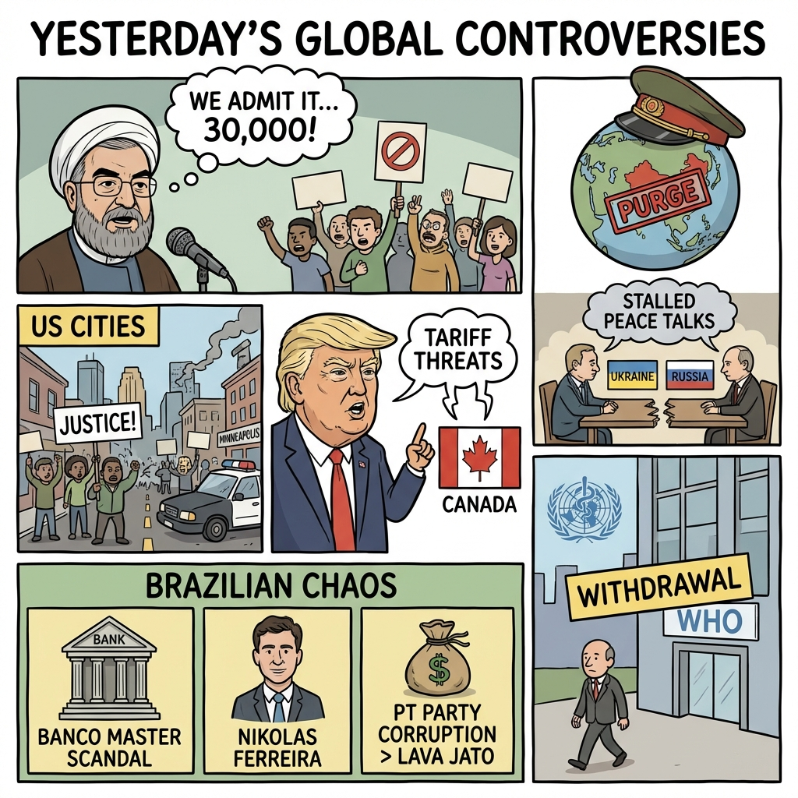

The Daily Globe: Iran Admits Killing 30,000+ Protesters in Two Days, Minnesota Shooting and Political Tensions Escalate, and Banco Master Liquidation Scandal Rocks Brazil
Published on 2026-01-26

World
- Iran Admits Killing 30,000+ Protesters in Two Days
Officials reveal massive crackdown on Jan 8-9, stocks of body bags exhausted, compared to Tiananmen Square amid global outrage and Khamenei bunker reports.
- Minneapolis Shooting by Federal Agents Sparks Protests
Man killed during ICE arrest, third incident this month, fueling unrest and Senate shutdown threats over funding.
- Trump Threatens 100% Tariffs on Canada Over China Deal
Escalating trade wars, US interest in Greenland and Venezuela, new defense strategy downgrades Europe.
USA
- Minnesota Shooting and Political Tensions Escalate
Federal agents kill man in Minneapolis, demands for voter rolls, CEOs urge de-escalation amid sanctuary policy debates.
- US Withdraws from WHO Amid Global Backlash
Trump pulls out of 'global slush fund', challenging UN, seen as isolationist.
- Epstein Client Files Blocked by US Judge
Renewed scandal over elite corruption, tied to fraud allegations and political violence.
Brazil
- Banco Master Liquidation Scandal Rocks Brazil
Involves politicians and judges, surpasses INSS scandal in controversy.
- Nikolas Ferreira Linked to Banco Master, Rally Ends in Tragedy
Accused of using event to distract from scandal ties.
- PT Accused of Surpassing Lava Jato in Corruption
Ongoing outrage over political scandals under Lula.
Topic Index
- iran-massacre
- minneapolis-shooting
- trump-tariffs
- china-purges
- ukraine-war
- election-fraud
- who-exit
- epstein-scandal